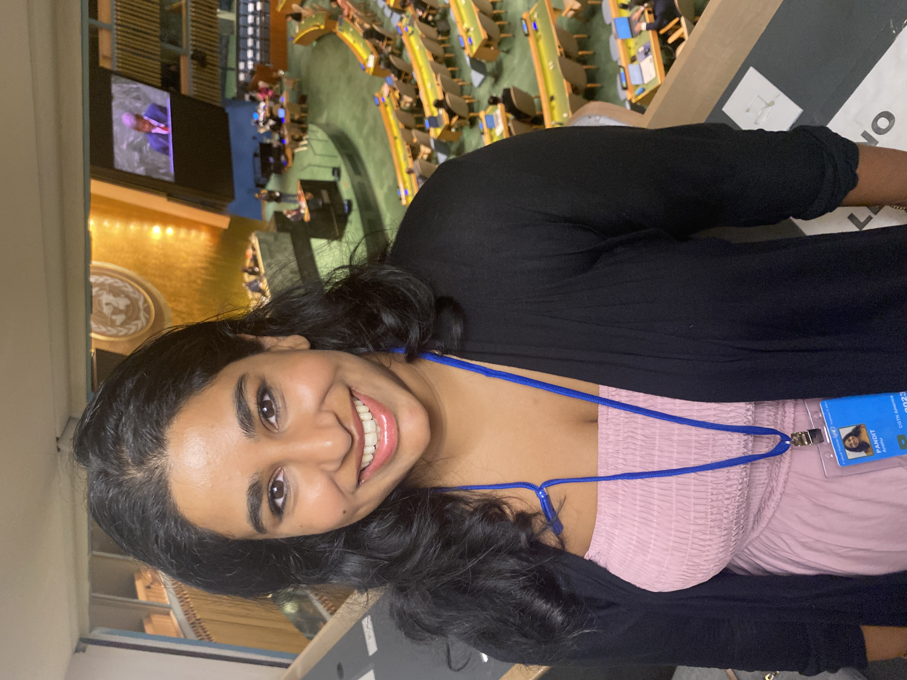

The Newsroom Years
A decade of storytelling under deadline.
For over ten years, Anshu produced international news for CGTN America, Sky News, SBS World News, and ABC Australia — covering everything from breaking news to UN Climate Summits, APEC, and the UN Ocean Conference.
That newsroom discipline — editorial rigor, speed, accuracy under pressure — is the foundation she brings to every project.
Now, her storytelling remains grounded in journalism, but focuses on impact — because the planet deserves more than a 90-second news package.